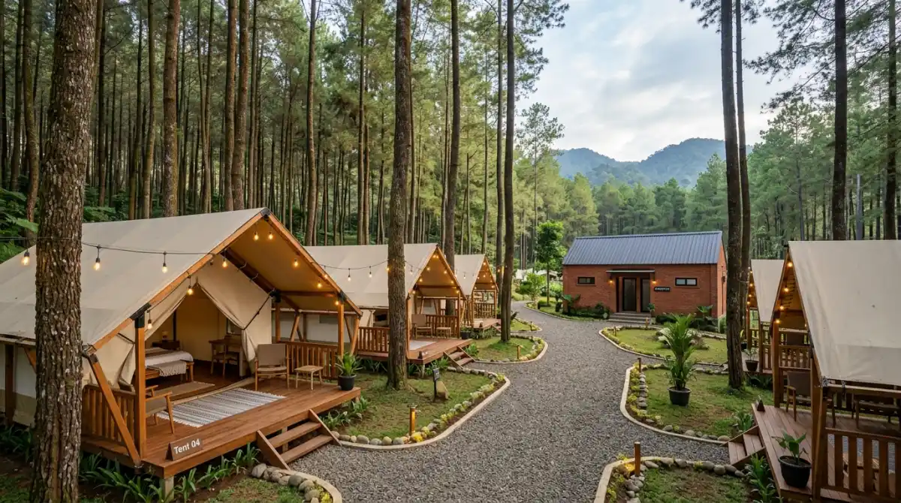

Matahari terbit di kawasan dataran tinggi Batu Malang adalah salah satu pemandangan paling memukau yang bisa kamu saksikan langsung dari tendamu.
Matahari terbit di kawasan dataran tinggi Batu Malang adalah salah satu pemandangan paling memukau yang bisa kamu saksikan langsung dari tendamu.
- Mengapa Batu dan Malang Adalah Destinasi Kemah Ideal?
- 5 Rekomendasi Destinasi Wisata Tenda dengan Sunrise Terbaik
- 1. Batu Sunrise Camp
- 2. Bumi Perkemahan Bedengan
- 3. Coban Rondo Campervan Park
- 4. Bukit Jengkoang, Bumiaji
- 5. Ranu Regulo, Taman Nasional BTS
- Persiapan Singkat Sebelum Berangkat
- Kesimpulan
Berapa kali kamu mematikan alarm pagi ini hanya untuk kembali tidur dan mengulang rutinitas yang persis sama seperti kemarin? Di balik layar laptop dan tumpukan laporan bulanan yang terus merevisi masa mudamu, hari-harimu berlalu begitu cepat. Cobalah bayangkan dirimu sepuluh tahun dari sekarang; ingatan apa yang ingin kamu simpan?
Waktu adalah satu-satunya aset yang tidak bisa direvisi atau dinegosiasikan ulang. Jangan biarkan masa keemasan fisikmu habis di balik meja kerja tanpa pernah merasakan kemewahan embun pagi secara langsung. Jika kamu butuh pelarian singkat yang tidak menguras sisa cuti tahunan, merencanakan perjalanan wisata tenda ke dataran tinggi adalah jawabannya. Tidak perlu bingung, kawasan Batu dan Malang menyimpan deretan surga tersembunyi yang siap menyambutmu. Mari kemas tasmu dan temukan tempat terbaik untuk menyapa matahari terbit.
Mengapa Batu dan Malang Adalah Destinasi Kemah Ideal?
Memilih lokasi pelarian akhir pekan itu ibarat memilih vendor untuk proyek kantor; kamu butuh jaminan kualitas, kredibilitas, dan fasilitas yang tidak menyusahkan. Dalam hal ini, kawasan Batu dan Malang memiliki portofolio yang tidak terbantahkan. Secara geografis, wilayah ini dikelilingi oleh pegunungan megah seperti Arjuno, Welirang, dan gugusan Semeru. Ketinggiannya memberikan garansi udara sejuk yang menembus tulang, sebuah kemewahan yang tidak bisa kamu beli di Jakarta atau Surabaya.
Kini, orang tidak lagi mencari lokasi yang terisolasi total. Masyarakat urban mencari wisata tenda yang menawarkan keseimbangan: alam liar yang otentik di pagi hari, namun tetap memiliki toilet bersih dan colokan listrik di malam hari. Pengelola kawasan wisata di Batu dan Malang sangat memahami hal ini. Mereka telah meng-upgrade infrastruktur mereka agar ramah bagi kendaraan roda empat dan pemula, menjadikan wilayah ini pusat destinasi leisure alam terbaik di Jawa Timur.
5 Rekomendasi Destinasi Wisata Tenda dengan Sunrise Terbaik
Berikut adalah kurasi lokasi perkemahan yang tidak hanya menawarkan lahan untuk mendirikan tenda, tetapi juga menyajikan panorama sunrise yang akan membuatmu lupa pada semua tenggat waktu pekerjaanmu.
Batu Sunrise Camp: Harmoni Pagi dengan Fasilitas Bintang Lima
Berada di urutan pertama, Batu Sunrise Camp adalah representasi sempurna dari kemudahan dan keindahan. Seperti namanya, daya tarik utama dari lokasi ini adalah orientasi pemandangannya yang langsung menghadap ke ufuk timur, memberikan pemandangan matahari terbit keemasan yang perlahan menyinari lembah kota Batu.
Bagi kamu yang datang bersama rombongan kantor atau keluarga besar, tempat ini sangat direkomendasikan. Fasilitasnya sangat mengakomodasi standar kebersihan pekerja kota; toiletnya terawat, akses air bersih melimpah, dan penerangan malam harinya cukup estetik. Kamu bisa memesan paket wisata tenda di mana pihak pengelola sudah mendirikan tenda, menyiapkan matras, hingga fasilitas api unggun. Kamu benar-benar hanya perlu datang membawa pakaian ganti dan ekspektasi tinggi yang pasti akan terpenuhi.
Bumi Perkemahan Bedengan: Syahdunya Hutan Pinus dan Sungai
Jika kamu mencari suasana camping klasik yang dipenuhi wangi getah pinus, Bedengan yang terletak di kawasan Dau, Kabupaten Malang, adalah pilihan wajib. Tempat ini sangat populer karena dilintasi oleh aliran sungai jernih berbatuan besar yang suaranya memberikan terapi relaksasi alami.
Meskipun letaknya sedikit tersembunyi dan dikelilingi pohon pinus yang rimbun, akses jalannya sudah diaspal mulus hingga ke area parkir. Untuk mendapatkan view sunrise terbaik di sini, kamu perlu sedikit berjalan ke area terbuka di pinggiran bukitnya. Cahaya matahari pagi yang menembus sela-sela batang pohon pinus (ray of light) menciptakan siluet pemandangan yang sangat dramatis dan memukau untuk difoto.
Coban Rondo Campervan Park: Kepraktisan Berkemah di Sebelah Mobil
Bagi kamu yang menerapkan prinsip efisiensi waktu, di kawasan wisata Coban Rondo, Pujon, terdapat blok khusus untuk campervan atau car camping. Kamu bisa memarkir mobil tepat di sebelah tendamu. Konsep wisata tenda ini sangat ideal untuk pemula.
Lokasinya berada di dataran yang cukup tinggi dengan hamparan rumput hijau yang luas. Di pagi hari, kabut tipis akan turun menyelimuti area perkemahan sebelum akhirnya dipecah oleh hangatnya sinar matahari pagi. Fasilitas umumnya dikelola oleh Perhutani, sehingga standar keamanannya sangat terjamin. Jika siang hari terasa membosankan, kamu hanya perlu berjalan kaki sebentar untuk menikmati megahnya air terjun Coban Rondo.

Kawasan wisata tenda di Batu dan Malang kini hadir dengan fasilitas modern yang tetap mempertahankan keaslian alam pegunungan.Bukit Jengkoang: Petualangan Off-Road Menuju Mahkota Bumiaji
Untuk kamu yang menginginkan sedikit bumbu adrenalin sebelum bersantai, Bukit Jengkoang di Bumiaji, Kota Batu, menawarkan pengalaman yang sedikit berbeda. Akses menuju lokasi ini berupa jalan makadam dan tanah, sehingga sangat disarankan menggunakan kendaraan jeep atau motor trail (banyak jasa sewa kendaraan di sekitar desa).
Begitu tiba di puncak, rasa lelahmu akan dibayar tunai. Bukit Jengkoang adalah salah satu titik tertinggi di Bumiaji yang belum terlalu padat pengunjung. Saat fajar menyingsing, kamu akan disuguhi pemandangan spektakuler gunung Arjuno yang menjulang gagah dengan latar belakang langit jingga. Ini adalah lokasi wisata tenda yang memberikan sensasi eksklusif, seolah-olah kamu menyewa satu bukit penuh untuk dirimu sendiri.
Ranu Regulo: Magisnya Matahari Terbit di Tepi Danau
Jika kamu bersedia berkendara sedikit lebih jauh ke arah perbatasan Malang-Lumajang (di area Taman Nasional Bromo Tengger Semeru), Ranu Regulo adalah destinasi tier tertinggi untuk urusan pemandangan pagi. Berbeda dengan Ranu Kumbolo yang mengharuskanmu trekking berjam-jam, Ranu Regulo bisa dicapai dengan berjalan kaki santai kurang dari 15 menit dari area parkir Ranu Pani.
Mendirikan tenda di tepi danau yang tenang ini memberikan pengalaman spiritual tersendiri. Suhu di malam hari bisa sangat ekstrem (bisa mendekati 0 derajat Celcius di musim kemarau), jadi pastikan persenjataan jaket dan sleeping bag-mu sangat mumpuni. Namun, saat pagi tiba, uap air yang mengepul dari permukaan danau yang membeku, dipadukan dengan pancaran sinar matahari terbit dari balik bukit, akan membuatmu terpaku tanpa bisa berkata-kata.
"Pekerjaan di kantor tidak akan pernah ada habisnya. Namun, kesehatan mentalmu dan kesempatan untuk melihat dunia yang lebih luas memiliki batas waktu."
— Perspektif Pejalan SejatiPersiapan Singkat Sebelum Berangkat
Meski fasilitas di sebagian besar lokasi di atas sudah sangat baik, jangan pernah meremehkan cuaca dataran tinggi. Persiapan adalah kunci antara liburan yang menyenangkan dan bencana. Pastikan tenda yang kamu gunakan adalah jenis double layer yang tahan terhadap embun gunung.
Selalu bawa pakaian hangat dengan sistem berlapis (layering), matras tidur yang tebal, serta persediaan logistik kalori tinggi. Dan yang paling penting, selalu patuhi etika lingkungan. Jangan tinggalkan apa pun selain jejak kaki; bawa turun semua sampah plastikmu.
Kesimpulan: Jemput Matahari Pagimu Sekarang
Membaca ulasan dan melihat foto-foto indah di layar gawai tidak akan pernah bisa menggantikan pengalaman merasakan langsung dinginnya angin gunung yang menerpa wajahmu. Pekerjaan di kantor tidak akan pernah ada habisnya; jika kamu menyelesaikan satu masalah hari ini, akan ada masalah baru yang menunggu besok. Namun, kesehatan mentalmu dan kesempatan untuk melihat dunia yang lebih luas memiliki batas waktu.
Jangan biarkan rencana liburanmu hanya menjadi wacana usang yang tertimbun di ruang obrolan. Kawasan Batu dan Malang sudah menunggu dengan segala infrastruktur wisata tenda terbaik yang bisa mereka tawarkan.
Tentukan tanggalnya akhir pekan ini, hubungi teman perjalananmu, dan segera pesan tempatmu. Ambil kendali atas waktumu sendiri, sebelum kamu menyesal karena terlalu banyak menghabiskan pagi di bawah cahaya lampu neon, alih-alih di bawah hangatnya matahari terbit. Selamat merencanakan pelarianmu!
FAQ — Wisata Tenda Batu Malang